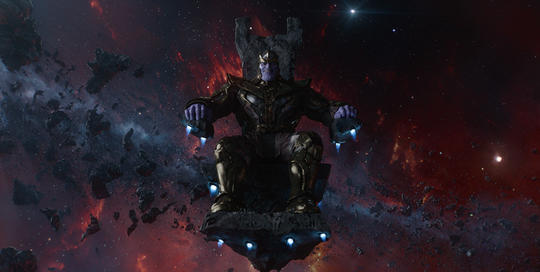

A Big Target
Thanks to his actions, the list of those who consider Thanos an enemy is vast, though he has gained a few particularly notable adversaries. First and foremost among them would be his daughters Nebula and Gamora, after they turn against him and seek his end by their own hands. Nebula’s Guardians of the Galaxy teammate, the warrior Drax, also hopes to be Thanos’ killer, as he seeks revenge for the deaths of his wife and daughter.
The entire Nova Corps, the intergalactic police force of the Xandarians, also opposes Thanos as he quests for the Infinity Stones, with the Guardians of the Galaxy serving as somewhat of an extension of their protective bubble.
After killing Heimdall, Loki, and other Asgardians, Thanos acquires the personal wrath of Thor, Asgardian god of thunder. In the wake of dispatching Gamora, he earns the loathing of Peter Quill, Star-Lord. Despite no longer officially functioning as a team, most Super Heroes who previously served as Avengers, along with allies like Doctor Strange, Spider-Man, and Black Panther, also stand against Thanos as he gathers every Infinity Stone.
